Visualization 1
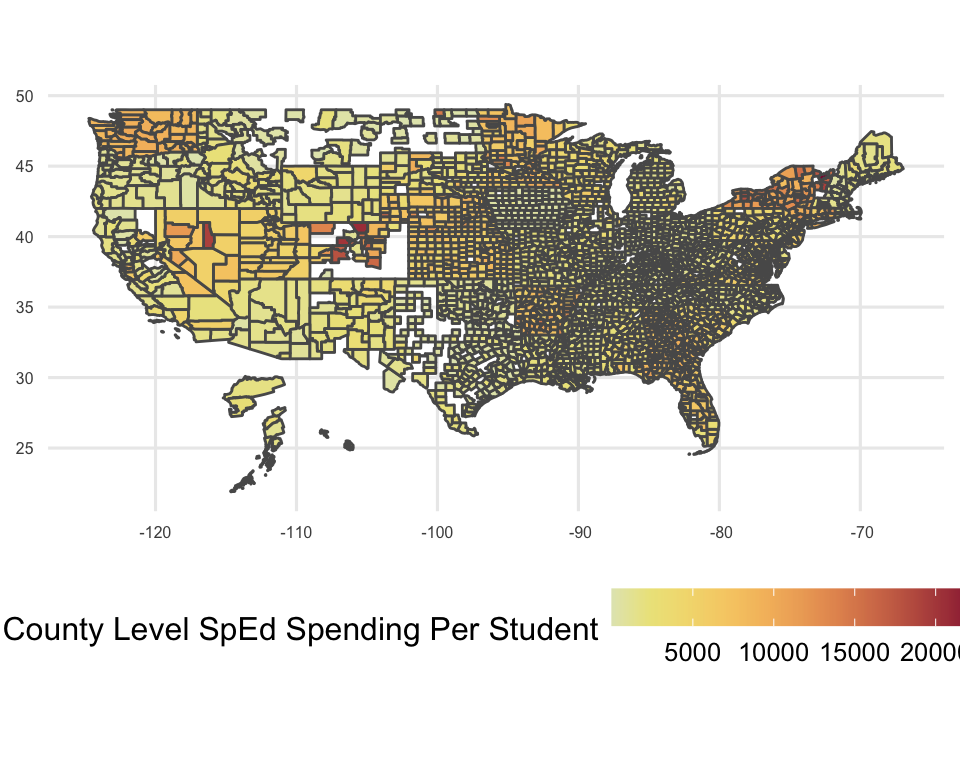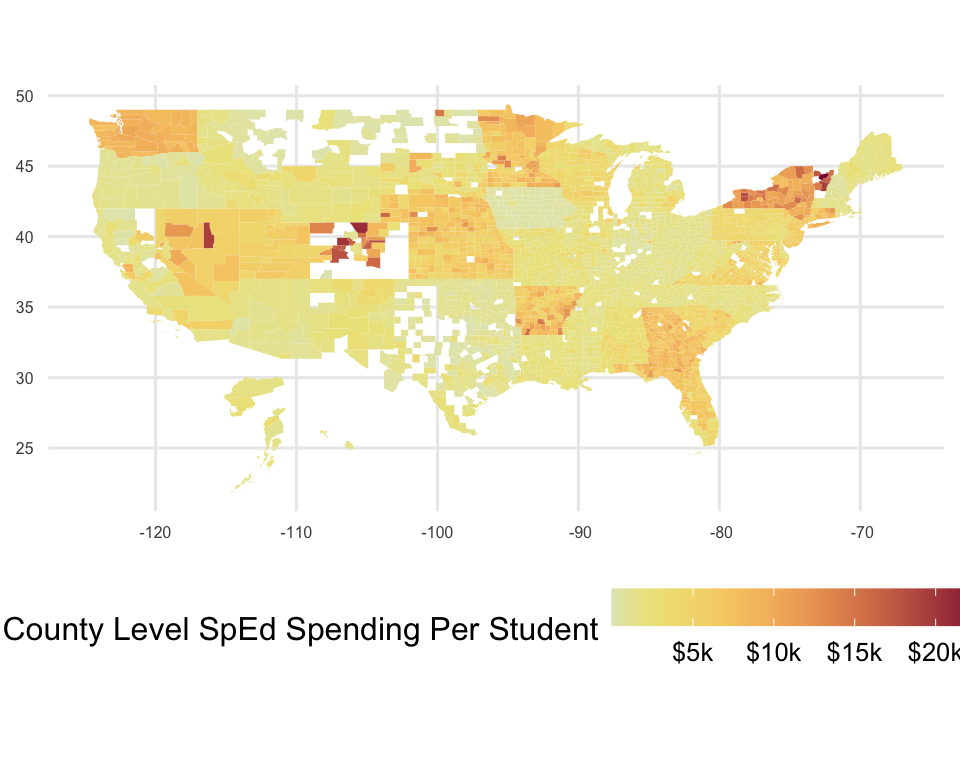
Initially, I wanted to provide more granular data about SpEd populations and spending. However, it appeared that there was a wide variation of state reporting quality.
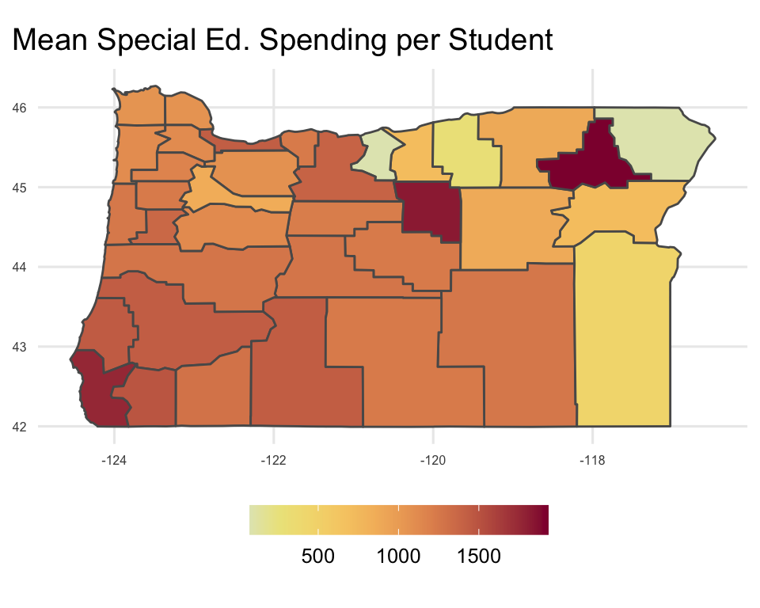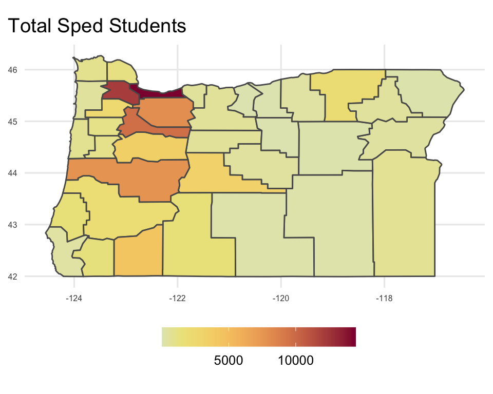
I decided to hone in on Oregon and created a series of plots that didn’t quite capture what I was hoping to.
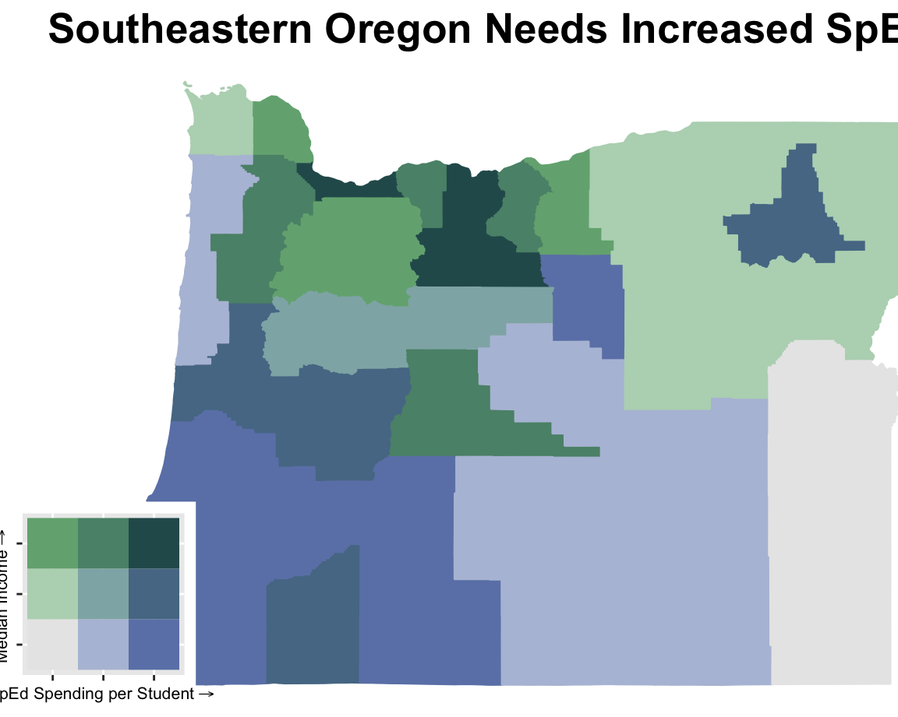
Despite the straightforward title, there’s a lot of interesting information to unpack here. While the southeastern portion of Oregon is the least well funded, the counties where SpEd funding quantiles are below the median income and vice versa.
Visualization 1
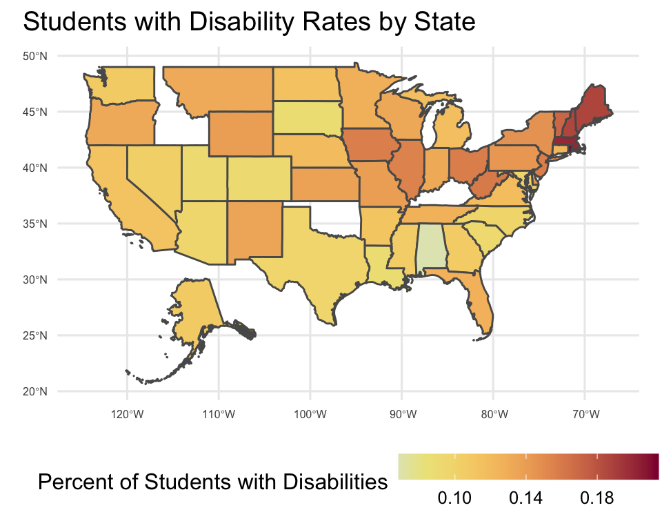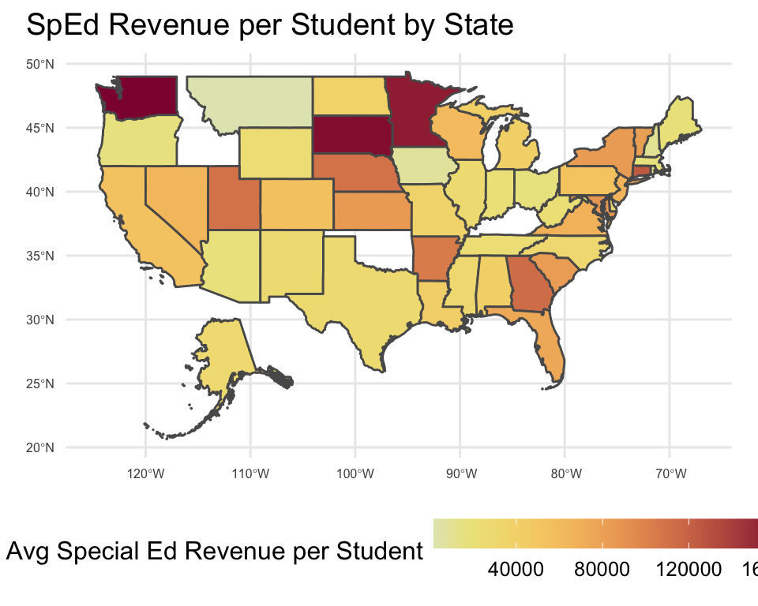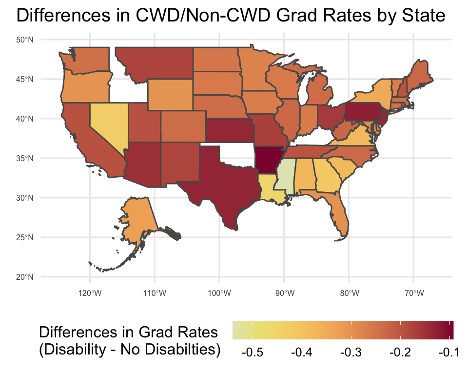
Initially, I wanted to display the disability rates, the sped revenue per student, and difference in CWD/Non-CWD grad rates on maps. Pretty straightforward already, but I need some basic information from this.
I decided to use interactive maps to visualize those data, so I can at least also get the name of each state and the exact value in this heatmap for each state.
Visualization 1
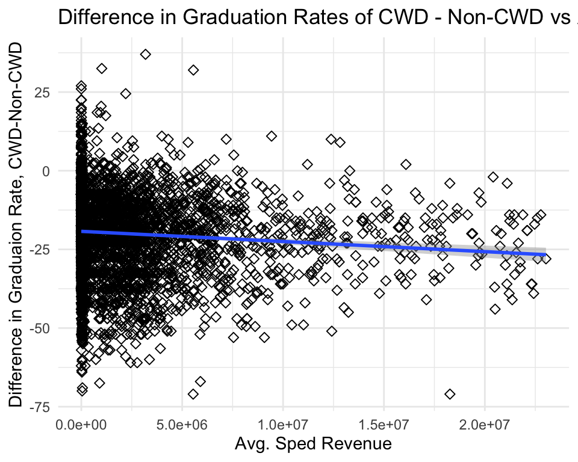
I wanted to do something interesting. I had another plot that had a more interesting analysis (logistic regression of likelihood of graduation >50% of CWD cohort vs SPED $/student), but interpretation tripped me up whenever I’d come back to it.
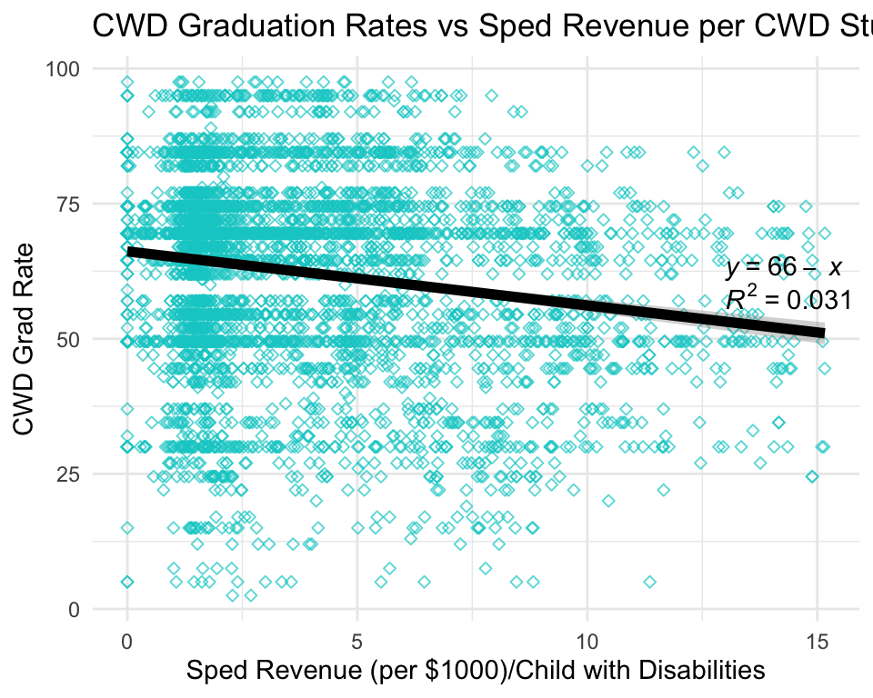
The colors are a bit cooler looking, I messed with the alpha, and added formulae. So now it reads a bit better. The first equation is suitable for students ages 12 and up, but I don’t like kids, so they’re not my target audience. I had to download a package to get the formulae added, but I think they’re a nice touch.
Visualization 2
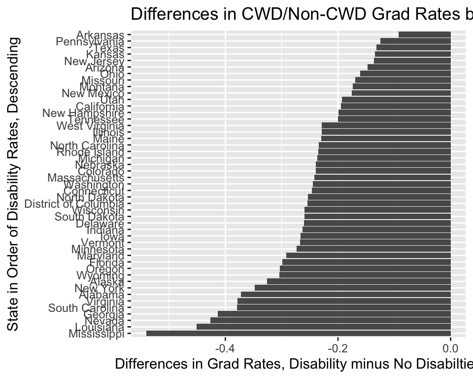
Ok, so pretty simple graph. Pretty much intended for anyone who can read. Overly busy, conveys nothing through color, kind of confusing orientation.
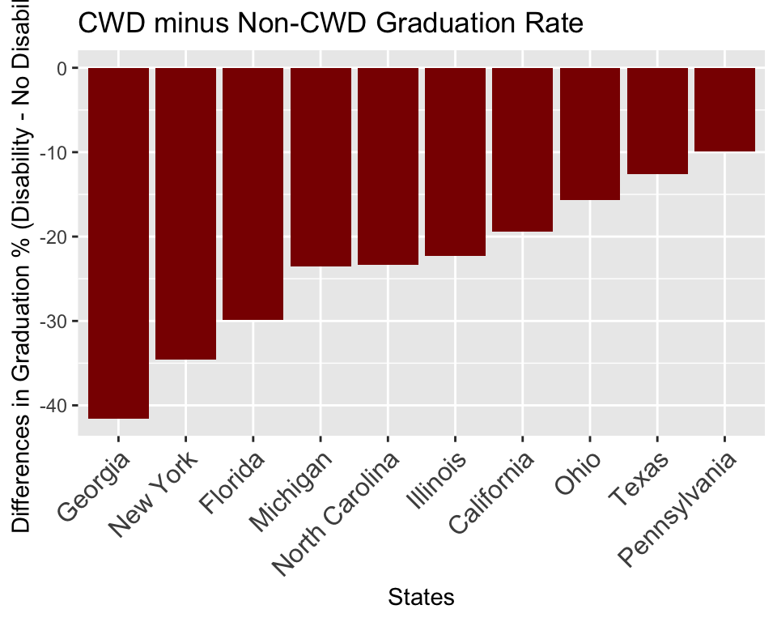
Adding blood red is still pretty macabre, so I kept the goth aesthetic. Also, I reduced the number of states to the 10 most populous. Still not in love with this chart. Removing the coord flip was on the right track, but now not in love with the y-axis.
Visualization 3
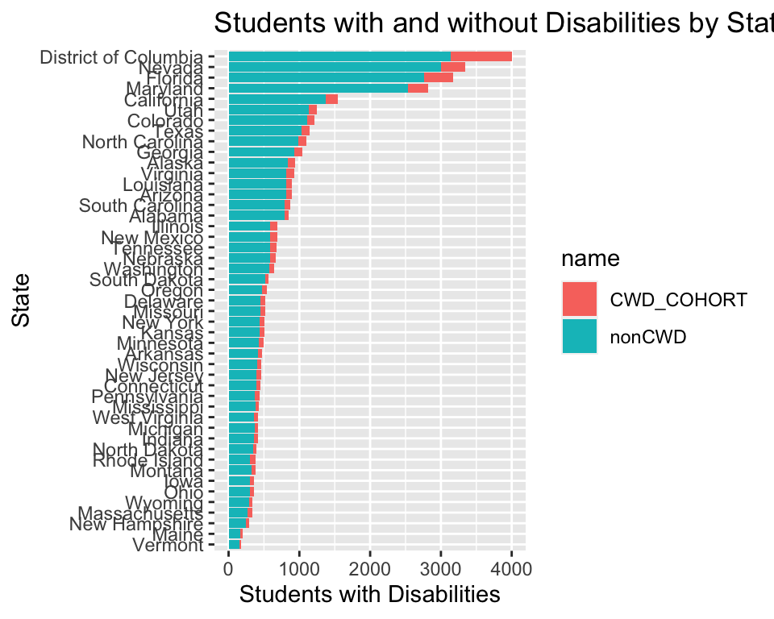
I wanted to convey both raw numbers of CWD students and the proportion of CWD. I actually think this was a fine start, I just ended up wanting to go a different route.
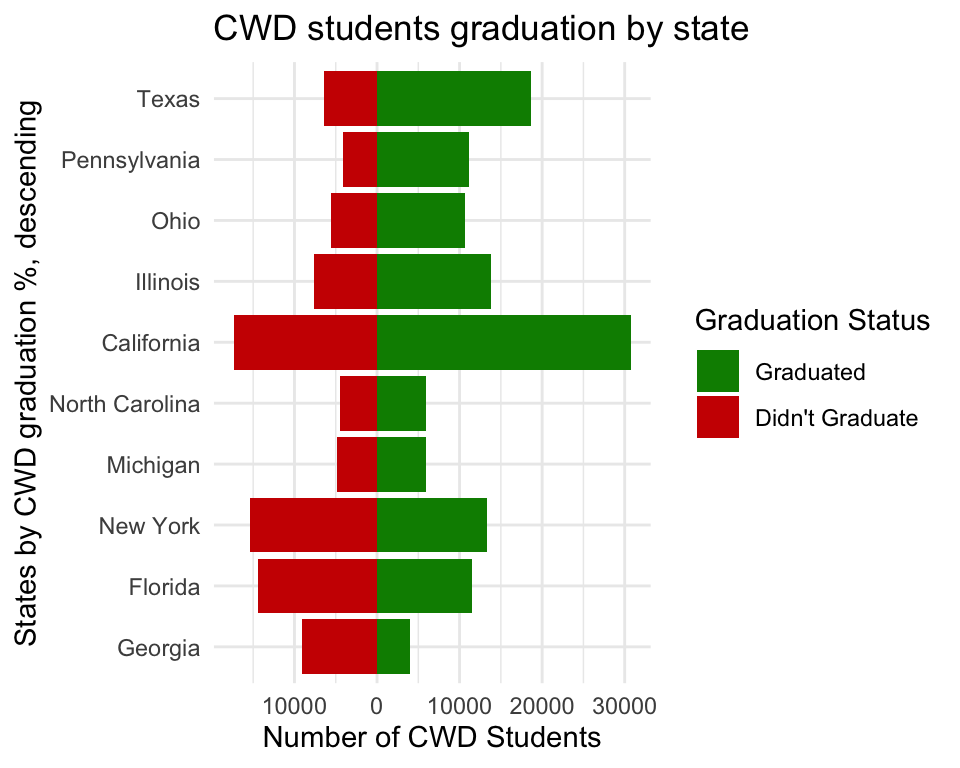
So instead I thought about visualizing the raw numbers of CWD who did and didn’t graduate. I took the 10 most populous states and sorted by proportion graduating. Also, I changed the color to look like a stoplight, for obvious reasons. The hits just keep coming. This took forever because I had to mess with the scales a bunch and selectively make some values negative.